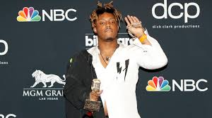

Juice Wrld

Full name: Jarad Anthony Higgins
Born: December 2, 1998 Chicago, Illinois, U.S
Died: December 8, 2019 (aged 21) Oak Lawn, Illinois, U.S.
Cause of death: Acute oxycodone and codeine intoxication
- Introduction
- Jarad Anthony Higgins (December 2, 1998 – December 8, 2019), known professionally as Juice Wrld (pronounced "juice world"; stylized as Juice WRLD), was an American rapper.
- Early life
- Jarad Anthony Higgins was born on December 2, 1998, in Chicago, Illinois.
He grew up in the South Suburbs spending his childhood in Calumet Park. He then later moved to Homewood,[9] where he attended Homewood-Flossmoor High School and graduated in 2017.
His parents divorced when he was three years old,
and his father left, leaving his mother to raise him and an older brother as a single parent.[12] Higgins' father died in June 2019.